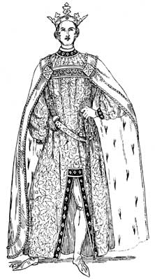
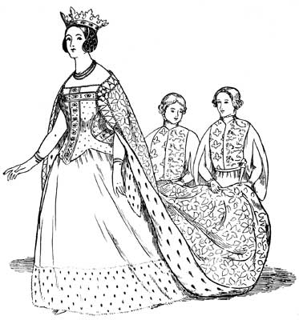

Florence Mary Gardiner, Evolution of Fashion. Davis, ed. from the 1897 edition. [eng]. Cited by chapter/paragraph.
Passages ix.1-ix.37
urn:cts:fuTexts:gardiner.eof.davis:ix.1-ix.37
ix.1CHAPTER IX.
ix.2FANCY COSTUME OF VARIOUS PERIODS.
ix.3"The dome, where pleasure holds her midnight reign, Here richly decked, admits the gorgeous train; Tumultuous grandeur crowds the blazing square, The rattling chariots clash, the torches glare."
ix.4During the Roman occupation of Britain, many sports and pastimes, with their appropriate costumes, were introduced into this country from Southern Europe and the East, and at a very early period mummings were popular with the people. These were primitive masquerades, where the actors, if we may judge from antique illuminations, generally mimicked the brute creation rather than human beings. They often appeared between the courses at banquets, and on important occasions elaborate pageants were arranged. Ships filled with mariners were sometimes introduced, or towers garrisoned with armed men, while the actors portrayed some allegorical lesson or historical incident.
ix.5A well-known event intimately connected with masking was the narrow escape from death by fire of Charles VI. of France, on January 29th, 1392. The king, with eleven of his knights, for the amusement of the Court, dressed like savages, in tight-fitting garments of linen covered with flax, and were dancing before the Queen and the Duchess de Berri, when the Duc d'Orleans with a torch accidentally ignited the inflammable costume of a masker, who was chained to four others. The Duchess protected the King by wrapping him in the train of her mantle, but four persons died in great agony.
ix.6Edward III. issued an ordinance against vagrants who exhibited scandalous masquerades in low ale-houses, and directed that such persons should be whipped out of London. The Feast of Fools was one of the most singular of these exhibitions. It somewhat resembled the Roman Saturnalia, and was enacted at Christmas. In England the celebration of this festival does not appear to have been attended with the same excesses as were commonly practised on the Continent, but it was nevertheless a season of licence, in which order and discipline were reversed. The churl was elected to represent the Pope; the buffoon was made a cardinal; and the lowest of the mob assumed for the time being the garb of the priesthood, and took possession of churches, where they parodied every part of the sacred service, and sang masses composed of obscene songs.
ix.7Dramatic representations were so tainted by the grossness and licentiousness of the age, that priests were prohibited from attending them, till the Church introduced religious plays, founded on scriptural incidents, and which were known as miracles and mysteries. For these the actors were trained by the clergy, and sacred edifices and vestments were placed at their disposal, to give truth and lustre to the representations.
ix.8There were frequent tournaments after the Norman Invasion, and these were patronized and encouraged by Richard C[oe]ur de Lion. From this era they occupied a prominent place in the national institutions and history, and afforded many opportunities for the display of picturesque costume. Ladies on these occasions were conspicuous, and sometimes rode in parti-coloured tunics with short hoods and tippets wrapped about their heads. Their girdles were decorated with gold and silver, and they carried small swords. The space marked out for the combat was surrounded by raised seats for high-born dames, princes, and the judges of the conflict. Knights wore their ladies' colours on their helmets, emblazoned on their clothing, and on the trappings of their horses; and throngs of troubadours, heralds, and minstrels dressed in gorgeous attire, were present to discharge their duties, and to give importance to the spectacle.
ix.9The ancient English Morris Dance, performed with other quaint usages on the 1st of May, is supposed to be of Moorish origin. It is depicted on an antique stained glass window at Betley, in Staffordshire. The May-pole and the Man with the Hobby Horse (who represents a Moorish King, and is the consort of the May Queen), occupy a prominent position. The other characters are the Fool, the Lesser Fool, Tom the Piper, a Spaniard, the Franklin or private gentleman, a Churl or peasant, the May Queen, a Nobleman, and a Friar. The dresses were adorned with bells, intended to sound the measure of the dancers. They were of different sizes, and were called the fore bell, the second bell, the treble, the tenor, and the great bell.
ix.10Planche, in his valuable work, the "CyclopAedia of Costume," states the earliest illustration of a _bal costume_ is in a MS. of the fifteenth century, in the Ambrosian Library at Milan, and he gives a reproduction from an old painting on wood dating from 1463, representing a dance by torchlight at the Court of Burgundy. Each person holds a long lighted taper, and this dance, up to the sixteenth century, was usually reserved for wedding festivities. In England masked balls were rare before the reign of William III., and in France they first took place during the regency of Philip, Duke of Orleans, when the Opera House was converted into a ball-room. Father Sebastian, a Carmelite friar, devised a means of elevating the floor of the pit to the level of the stage, and of lowering it at pleasure.
ix.11Ranelagh and Vauxhall Gardens, and Belsize House, Hampstead, were also places of popular resort, and scenes of many entertainments during the eighteenth century. There were pyrotechnic displays, bands of music, frequent balls, and facilities for dinner and supper parties. The lawns were dotted with arbours, lakes, and artificial cascades; the trees were festooned with coloured lamps, and the costumes of those who frequented these gatherings were elaborate and costly.
ix.12From the writings of Horace Walpole and others, we learn that private open-air galas were of common occurrence among the aristocracy, and he gives a description of a _festino_ at Northumberland House in honour of the Marquess of Tavistock and his bride; when arches and pyramids of lights alternately surrounded the enclosure, and festoons of lamps edged the railings. In 1761 Her Majesty Queen Charlotte surprised her husband on his birthday with a splendid garden party, followed by fireworks, a cold supper of a hundred dishes, and an illuminated dessert. The Duke of Richmond celebrated a similar occasion with a masked ball and music--the vocal parts performed by many of the nobility, in fancy dress. Here, too, there was a display of fireworks in the garden and from the river. Almack's new Subscription and Assembly Room was opened in February, 1765, under distinguished patronage; and Gibbon mentions a masquerade at a rival establishment, the Pantheon, which he states was above par in magnificence, and below par in humour, and cost E5000.
ix.13Five o'clock was the dinner hour of fashionable people during the eighteenth century, and three for those of lower rank. At eleven p.m. supper was usually served, and breakfast was from nine to eleven a.m. The House of Commons commenced sitting at two, and the Opera began at seven.
ix.14At this period the domino (evolved from the priestly cowl) was in great request, and was used in the boxes of theatres for purposes of concealment, and by those of questionable morals. Though the large hoop towards the close of the eighteenth century was only worn at Court, or in full dress, the pocket hoop for distending the panniers was still in vogue. For the abolition of the Court hoop, we are indebted to George IV., whose taste in dress was unimpeachable. Powder and patches maintained their ground till 1793, when they were discarded by Queen Charlotte and the Princesses. Aprons were regarded as a necessary item of a fashionable costume up to 1750, and the watch and etui adorned the waist, necklaces sparkled on the bosom, and bracelets were worn over long gloves.
ix.15The French Revolution affected masculine costume; and in 1789 were introduced into this country the muslin cravat, in which the chin was partially concealed, stand-up collars, Hessian boots, and round hats of beaver. Scarlet coats were much in vogue about 1784, and an anecdote in "The Life of Sir Astley Cooper" represents him as returning from a dancing academy in a scarlet coat, a three-cocked hat, a black glazed stock, nankeen knee-breeches, and silk stockings. This may be regarded as the ordinary costume of a gentleman at that period.
ix.16Wigs had begun to go out of fashion as early as 1763, in which year the wigmakers petitioned King George III. to support the trade by his example. "The hair," says Malcolm, "was dressed high on the head, whitened with powder, and alternately plaited and turned up or queued behind." When the hair powder tax--one guinea per annum--was enforced in 1795, thousands of heads reverted to their natural colour.
ix.17Some brilliant fancy dress balls (with a view to encouraging home trade) have taken place during the Victorian era. Of the first, which was given by the Queen and Prince Consort at Buckingham Palace in 1842, a permanent memorial exists in two handsome volumes compiled by J. R. Planche, containing carefully coloured illustrations of the various dresses, and autograph portraits of the wearers. They form an invaluable book of reference for those desiring accurate representations of the costume of the period of Edward III. (1327-1377). A special feature of this ball was a series of costume quadrilles, arranged by ladies of the Court and others of high rank. They were danced in the following order:--
ix.18French quadrille, led by H. R. H. the Duchess of Cambridge.
ix.19Spanish quadrille, led by the Duchess of Buccleuch.
ix.20German quadrille, led by the Duchess of Sutherland.
ix.21Crusaders' quadrille, led by the Marchioness of Londonderry.
ix.22Waverley quadrille, led by the Countess de la Warr.
ix.23Scotch quadrille, led by the Duchess of Buccleuch.
ix.24Cossack quadrille, led by Baroness Bremon.
ix.25Greek quadrille, led by the Duchess of Leinster.

ix.27Prince Albert, as Edward III., wore a costume copied from the effigy of that king in Westminster Abbey. It consisted of a long tunic of gold and blue brocade, reaching to the ankles. The collar, which fitted close round the neck, was bordered with purple velvet, thickly studded with jewels. The tunic, which had an opening up the centre to the height of the knee, was bordered and enriched with jewels to correspond with the collar, as were the wristbands. The hose were scarlet, also the shoes, which were embroidered with gold. Over the tunic, His Royal Highness wore a mantle reaching to the heels, composed of the richest scarlet velvet, bordered by a broad gold figured lace, set on each side with large pearls. It was lined with ermine, and connected across the breast by a band of purple velvet, studded with diamonds, rubies, and emeralds, and in the centre was a turquoise of immense size and perfect colour. The band was fastened to the mantle on either side by a massive gold ornament enriched with precious stones.

ix.29Her Majesty the Queen as Philippa of Hainault, wife of Edward III., was attired in a demi-trained skirt of crimson velvet, edged with miniver. Over this was worn a surcoat of blue and gold brocade, trimmed with fur to match, and embellished with a stomacher of jewels valued at E60,000. The other portions of the costume were also studded with jewels. The mantle was of gold brocade, with a floral design in silver. The hair was encased in a gold net, enriched with precious stones, and was surmounted by a crown.
ix.30Princess Augusta of Cambridge personated Princess Claude, daughter of Anne of Bretagne, Queen of France. Her dress of silver tissue was bordered with ermine, and the tunic was of light blue velvet, worked with the fleur-de-lis in silver. The low bodice was bordered with diamonds. The sleeves of silver tissue reached to the wrist, and were trimmed with rows of pearls. The gloves were jewelled, and a white tulle veil with silver embroideries depended from a turquoise and pearl diadem. By Her Majesty's command, her own dress, that of Prince Consort, and most of the costumes worn at this ball, were manufactured by the silk-weavers of Spitalfields.
ix.31For the second royal ball in June, 1845, the period of George II. (1727-1760) was selected, and 1200 guests were invited. The Queen looked extremely well in powder, and her dress is described as of cloth of gold and cloth of silver, with daisies and poppies worked in silk, and shaded in natural colours. The trimmings and ruffles of exquisite point lace--had belonged to Queen Charlotte--and the stomacher was trimmed with lace and jewels. The sacque was ornamented with ribbons, caught with diamonds. On the powdered coiffure was a diamond crown; Her Majesty's white shoes had red rosettes with diamond centres, and she wore the star and ribbon of the Order of the Garter. Prince Albert had a costume of the same period, with the Star of the Garter, and the Order of the Golden Fleece in brilliants. The Marchioness of Douro, the Duke of Wellington's daughter-in-law, was the acknowledged belle of this ball, and wore E60,000 worth of diamonds. Miss--now the Baroness--Burdett Coutts was also present, her dress trimmed with jewels once the property of Marie Antoinette.
ix.32In 1871 the Princess of Wales attended the Waverley Ball at Willis' Rooms, with several other members of the Royal Family, and was much admired in the character of the ill-fated Mary Stuart. On July 22nd, 1874, a fancy dress ball was given by their Royal Highnesses the Prince and Princess of Wales at Marlborough House, for which some beautiful costumes were prepared. The Princess wore a handsome Venetian dress, and danced in the first quadrille with the present Duke of Devonshire. The Prince in a Cavalier costume opened the ball with the late Duchess of Sutherland. The chief costume quadrilles on this occasion were the Venetian, the Vandyck, Characters in Fairy Tales, and a Pack of Cards.
ix.33Another historic _bal costume_ was given in February, 1895, at Warwick Castle, by the Earl and Countess of Warwick. No more fitting background for such a function can be imagined than this stately mansion, which has been a centre of hospitality for countless generations, but has never been presided over by no more gracious and popular chatelaine than the present Countess. Lady Warwick looked very beautiful as Marie Antoinette (the consort of Louis XVI. of France) in a petticoat and corsage of exquisite English brocade, with a design of shaded roses, enriched with gold thread on a pearl-coloured ground. The train of royal blue velvet, embroidered in gold thread with the fleur-de-lis, was attached to the shoulders by a band of diamonds; and the Warwick jewels, diamond stars, were arranged on the corsage veiled with gold flecked gauze, which was also employed for the puffed sleeves. Her elaborate white coiffure was surmounted by a white muslin cap edged with blue velvet and adorned with diamond aigrettes and plumes of pink, white, and blue feathers. Lady Marjorie Greville (the only daughter of Lord and Lady Warwick) with Miss Hamilton acted as train-bearers. They wore the daintiest white costumes of the period, composed of broche silk, with fichus of white chiffon, and silk hats trimmed with feathers. Each carried a long crook tied with white ribbons and bunches of flowers, and the effect was charming. The Earl of Warwick wore a French Court costume, the coat of ruby velvet profusely trimmed with gold lace, white cloth cuffs, and revers. The long white kerseymere waistcoat was braided in gold, and the white knee-breeches and low shoes were ornamented with diamond buckles. The Earl's wig, _a la mousquetaire_, was tied with a bow of black ribbon, and he carried a tricorne hat with white ostrich plumes, and white gauntlet gloves. Lady Warwick's two sisters, the Duchess of Sutherland and Lady Angela Forbes, represented Marie Letzinka, consort of Louis XV., and Lady Mary Campbell. The former wore a magnificent gown of white satin de Lyon. The skirt embroidered with a flight of swallows in silver and crystals, a deep bertha of Point de Flandre, with ruffles of the same on the short sleeves. The train of crimson velvet was embroidered with the French emblem, and Her Grace had a stomacher of splendid diamonds. Lady Angela Forbes' dress was of white muslin, with a blue sash, and picturesque hat of turquoise silk, trimmed with feathers and roses. Princess Henry of Pless, as la Duchesse de Polignac, had a dress of rich white satin, the skirt embroidered 18in. deep, with turquoises and brilliants, a powdered wig, and the same jewels in her hair. Lady Eva Dugdale, sister to the Earl of Warwick, and lady-in-waiting to Her Royal Highness the Duchess of York, wore a Louis Quinze white satin dress, covered with pink roses, corsage _en suite_ fastened with large diamond ornaments. A silver trellis pattern was worked round the hem of the skirt, and white silk mittens and shoes completed the costume. Lady Rosslyn chose a white embroidered muslin petticoat, the overdress of pink and red striped silk, fichu and ruches of black lisse, and a picturesque hat. Lady Flo Sturt, as Madame la Marquise de Pompadour, was in rich cream satin, with bodice and sleeves of antique lace, and stomacher of diamonds. A black satin toque, with aigrette of diamonds, contrasted well with the white wig. Count Deym, the Austrian Ambassador, was in English Court dress. Prince Henry of Pless, in mousquetaire costume, represented the Vicomte de Bragelonne. The Duke of Manchester was in white satin breeches, waistcoat to match, bordered with gold, and coat of white and silver brocade with moss roses and foliage.
ix.34The scene inside the Castle was one of unparalleled brilliancy, while those who glanced from the mullioned windows saw by bright moonlight the Avon frozen, the ancient cedars glistening with frost, and the surrounding country wrapped in a snowy mantle. The entire ground floor of the Castle was thrown open, and no pains were spared to give as complete a representation as possible of the gorgeous fetes which made the Court of Marie Antoinette famous throughout Europe. The finest spectacle presented itself when the guests assembled at supper in the oak-lined hall, where the light of a thousand candles was reflected in the bright steel armour which surrounded the walls. Several high screens, hung with Beauvais tapestry and shaded by huge palms, filled the angles of the hall, and the stone walls were partially concealed by yellow and silver embroideries. In the huge fireplace logs crackled, and on small round tables were placed silver candelabra with crimson shades and floral decorations, consisting of scarlet geraniums and maiden-hair fern. The centre table was reserved for Marie Antoinette and her Court, and here was the choicest display of family plate, including, amongst other valuable specimens of the goldsmith's art, a golden cup modelled by Benvenuto Cellini. From the hall you entered the Red Drawing room, which contains a marble table, inlaid with flowers and fruit, and formerly the property of Marie Antoinette. Next is the Cedar Drawing-room, used as the ball-room, on whose walls are many family portraits and other paintings by Vandyck; the remainder of the suite of State apartments were used as withdrawing-rooms between the dances; and at the opposite end of the Castle is the Library, the Billiard-room, and the Countess's lovely Louis Seize Boudoir, in ivory tints, with festoons of delicately-shaded flowers.
ix.35Dancing was carried on with great spirit till early morning, and the tardy winter sun had risen ere the last carriage drove away from one of the most successful balls of the nineteenth century.
ix.36Among the many important entertainments given by members of the English aristocracy in honour of the sixtieth year of the reign of Queen Victoria, was a Costume Ball at Devonshire House, Piccadilly, on July 2nd, 1897, when the Duke and Duchess of Devonshire received nearly all the members of the Royal Family, many distinguished guests from the Colonies, and members of the Corps Diplomatique. This historic mansion was built for the third Duke of Devonshire, and it was here that Georgiana, the beautiful Duchess of Devonshire, held her Court. It contains a fine suite of reception rooms on the first floor; a gallery of pictures, in which the old masters are well represented; and extensive grounds in the rear, which on this occasion were decorated with thousands of Chinese lanterns and fairy lamps. The principal feature of the ball was a grand procession of the guests, headed by the Duke and Duchess of Devonshire, the former personating Charles V. of Germany, and the latter attired with Oriental magnificence as Zenobia, Queen of Palmyra, in a robe of silver tissue wrought with jewels. The mantle was of cloth of gold similarly treated, and the bodice was also studded with precious stones. The head-dress consisted of white ostrich plumes and a golden and jewelled crown, from which depended chains of pearls. H.R.H. the Princess of Wales, as Margaret of Valois, was surrounded by the ladies of her Court, their Royal Highnesses Princess Charles of Denmark, Princess Victoria of Wales, the Duchess of Fife, and the Duchess of York. The Princess of Wales wore a gown of white satin wrought with silver, and a train of cloth of gold lined with silver and superbly jewelled. H.R.H. the Prince of Wales, as Grand Master of the Knights Hospitallers of St. John of Jerusalem and Chevalier of Malta, wore a rich Elizabethan costume carried out in black and silver, and bearing the white cross of the Order on one shoulder. The Duke of York represented the Earl of Cumberland, one of Queen Elizabeth's courtiers. Prince Charles of Denmark was a Danish student. The Duke of Connaught wore the uniform of a military commander during the reign of Elizabeth, and the Duchess looked charming as Queen Anne of Austria in a picturesque gown with puffed sleeves. The Eastern Queens were magnificently arrayed and blazing with jewels. Lady de Trafford was Semiramis, Empress of Assyria, in a dress copied from a vase in the British Museum. Princess Henry of Pless was Queen of Sheba, in a robe and train of shot purple and gold tissue, elaborately embroidered with turquoises and other stones, and wore an Assyrian jewelled head-dress, decorated with a diamond bird and aigrette. Another Queen of Sheba was Lady Cynthia Graham, and there were two Cleopatras--Lady de Grey and Mrs. Arthur Paget. The husband of the latter accompanied her as Mark Antony. Lady Elcho was a Byzantine Queen, Miss Muriel Wilson was Queen Vashti, and the Countess of Dudley, as Queen Esther, wore a dress of white crepe, embroidered with gold and studded with amethysts, turquoises, and pearls.
ix.37The Elizabethan Court was represented by Lady Tweedmouth as Queen Elizabeth, in a gown copied from a picture in the National Portrait Gallery. Her canopy was carried by four yeomen in uniforms of crimson, black, and gold, copied from Holbein's picture of "The Field of the Cloth of Gold," in the Hampton Court collection. Lord Tweedmouth was the Earl of Leicester, in slashed doublet and hose of ruby velvet and satin, enriched with gold embroidery. Lady Edmondstone, as Mary Queen of Scots, wore a dress of pale blue velvet, and tulle veil head-dress and ruff worked with pearls. She was attended by the Duchess of Hamilton, dressed in the character of Mary Hamilton, the Queen's favourite maid of honour. The Countess of Warwick, as Marie Antoinette, was beautifully dressed in a petticoat of rich white satin and a Court gown of English brocade, with a train of Royal blue velvet. The hair was powdered, and she was attended by four pages in white satin suits and three-cornered hats, bearing over her ladyship a canopy of blue velvet. This group included the Duchess of Sutherland, as Charlotte Corday in a gown of red _crepe de Chine_, a muslin fichu and cap, trimmed with point d'Alencon lace, and dagger at waist. Lady Westmorland made a lovely Hebe, and Lady Angela Forbes, as the Queen of Naples, wore an Empire gown of ivory duchesse satin, embroidered with silver and diamonds, and a train of lilac velvet, edged with jewelled embroidery and lined with satin. The head-dress consisted of a small jewelled crown and two white feathers. Among many other notable costumes should be mentioned the Marchioness of Tweedale's, as the Empress Josephine, as she appears in the Coronation picture at the Louvre, Paris; the Marchioness of Londonderry, as the Empress Marie Therese, of Austria, and the Marchioness of Zetland's, as Queen Henrietta Maria, wife of Charles I. of England; Viscountess Raincliffe, as the Empress Catherine II. of Russia, wore white satin, and her dress was an exact copy of the picture in the British Museum by Lambi. The Court gown of the Duchess of Portland, as Duchesse de Savoia, who headed the Venetian procession, was composed of white satin veiled, with lisse wrought with silver, partially covered by a silver cloth mantle, embroidered with pearls and diamonds, and diamonds and emeralds were introduced in the coiffure.